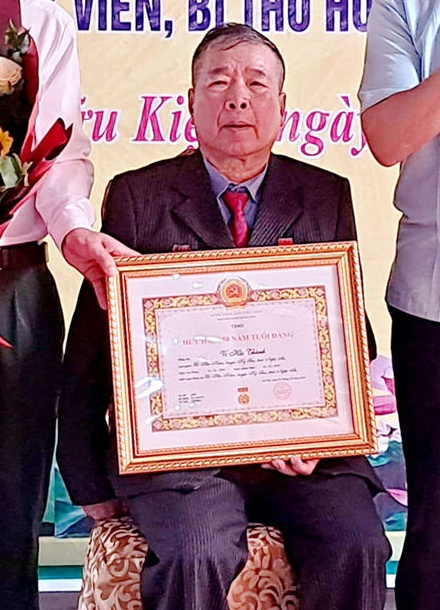
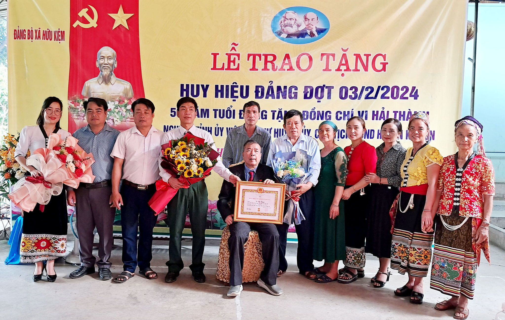

1. Bản lĩnh người đứng đầu nơi "cổng trời" miền Tây xứ Nghệ
Kỳ Sơn là vùng đất phên dậu xa xôi và hiểm trở bậc nhất của tỉnh Nghệ An, với hơn 192 km đường biên giới tiếp giáp nước bạn Lào. Nơi đây là địa bàn cư trú lâu đời của đồng bào các dân tộc Thái, H'Mông, Khơ Mú, Đan Lai. Những năm đầu thập niên 2000, Kỳ Sơn nằm trong nhóm huyện nghèo 30a đặc biệt khó khăn nhất cả nước. Địa hình núi cao vực thẳm chia cắt hiểm trở, giao thông cách trở, tỷ lệ hộ nghèo có nơi lên tới hơn 80%, đời sống bà con quanh năm đối mặt với giáp hạt, thiếu thốn.
Sinh năm 1954, là người con ưu tú của đồng bào dân tộc Thái lớn lên từ bản làng nghèo khó, đồng chí Vi Hải Thành thấu hiểu sâu sắc từng phong tục tập quán, nếp nghĩ và những nỗi cơ cực ngàn đời của bà con miền sơn cước. Trưởng thành từ cán bộ cơ sở, kinh qua nhiều vị trí lãnh đạo và đảm nhận trọng trách Phó Bí thư Thường trực, rồi Bí thư Huyện ủy kiêm Chủ tịch HĐND huyện Kỳ Sơn liên tục từ năm 2003 đến 2014, ông luôn đau đáu một tâm nguyện: Làm sao để đồng bào mình bớt đói, bớt nghèo, và biên cương được bình yên, no ấm.

Phương châm hành động của ông rất đỗi mộc mạc mà quyết liệt: “Làm lãnh đạo ở vùng cao biên giới, nếu chỉ ngồi bàn giấy nghe báo cáo thì không bao giờ hiểu được nỗi khổ thật sự của dân. Muốn dân tin, dân theo, cán bộ phải xỏ dép rọ, khoác ba lô cuốc bộ về tận bản xa, cùng ăn, cùng ở, cùng làm, nói được tiếng của dân và đem lại ấm no cụ thể cho từng nếp nhà”.
Hình ảnh người Bí thư Huyện ủy với vóc dáng rắn rỏi, nụ cười đôn hậu, lội suối băng rừng ngày đêm vào tận các bản làng heo hút nhất như Keng Đu, Đoọc Mạy, Huồi Tụ, Na Ngoi đã trở thành biểu tượng thân thương, gần gũi trong lòng đồng bào các dân tộc Kỳ Sơn.
2. Kỳ tích xóa sổ cây anh túc – Đánh thức sức sống trên những rẻo cao
Nhắc đến Kỳ Sơn những năm trước 2005, nhiều người vẫn chưa quên nỗi ám ảnh về cây thuốc phiện. Từng có giai đoạn, cây anh túc phủ trắng các sườn núi cao ở Mường Lống, Tây Sơn, Na Ngoi, Huồi Tụ. Bóng ma thuốc phiện kéo theo tệ nghiện ngập bủa vây từ người già đến thanh niên, cái nghèo đói truyền kiếp đè nặng lên từng nóc nhà và làm suy kiệt sức sống của giống nòi.
Đứng trước bài toán sinh tử của huyện nhà, Bí thư Vi Hải Thành cùng tập thể Ban Thường vụ Huyện ủy Kỳ Sơn xác định: Nhổ bỏ cây thuốc phiện bằng biện pháp hành chính hay xử phạt là chưa đủ, mà quan trọng nhất là phải giải quyết bài toán sinh kế – phải cho bà con thấy có một con đường sống khác ấm no, bền vững hơn cây thuốc phiện.
Ông kiên trì cùng các lực lượng vũ trang (Bộ đội Biên phòng, Công an, Quân sự) và cán bộ nông nghiệp lặn lội đến từng bản Mông, bản Khơ Mú, tranh thủ uy tín của các già làng, trưởng bản và người có uy tín trong dòng họ để vận động, thuyết phục. Đồng thời, huyện quyết liệt chuyển đổi cơ cấu cây trồng: đưa các giống mận tam hoa, đào bản địa, chè shan tuyết, gừng Kỳ Sơn, mở rộng diện tích ngô lai và phát triển chăn nuôi bò hàng hóa.
Nhờ sự bền bỉ, thấu tình đạt lý và quyết liệt ấy, Kỳ Sơn đã làm nên kỳ tích lịch sử: xóa sổ hoàn toàn diện tích cây thuốc phiện trên toàn địa bàn. Thung lũng Mường Lống từ chỗ chìm trong khói thuốc phiện u ám đã lột xác ngoạn mục, trở thành “Đà Lạt của miền Tây xứ Nghệ” với những mùa hoa mận trắng tinh khôi, thu hút du khách và mang lại nguồn thu nhập ổn định cho hàng nghìn hộ gia đình.
3. Sáng kiến lịch sử: "Đảng viên về bản, nhận đỡ đầu hộ nghèo"
Một trong những di sản lãnh đạo nổi bật nhất mang đậm dấu ấn Vi Hải Thành chính là phong trào “Đảng viên về bản, nhận đỡ đầu hộ nghèo”. Từ đầu những năm 2000, Ban Thường vụ Huyện ủy Kỳ Sơn đã ban hành chủ trương phân công cán bộ, đảng viên từ các phòng, ban cấp huyện đến từng chi bộ cơ sở trực tiếp nhận đỡ đầu các hộ nghèo tại địa bàn.
Khác với các hình thức cứu trợ thụ động hay hỗ trợ phong trào, mô hình này quán triệt sâu sắc phương châm “cầm tay chỉ việc”:
- Khảo sát tận gốc: Cán bộ trực tiếp xuống từng hộ gia đình được phân công để tìm hiểu căn nguyên đói nghèo (thiếu đất sản xuất, thiếu vốn, thiếu kinh nghiệm, do bệnh tật hay do tập quán canh tác lạc hậu).
- Đồng hành thực chất: Cán bộ đảng viên trích một phần tiền lương hoặc vận động nguồn lực để tặng con bê giống, lợn giống, hỗ trợ phân bón, hướng dẫn làm chuồng trại giữ ấm mùa đông, chỉ cách gieo cấy lúa nước hai vụ.
- Trách nhiệm đến cùng: Đồng hành kiên trì hàng tháng, hàng năm trời cho đến khi hộ gia đình thật sự làm chủ được cách làm ăn và tự lực vươn lên thoát nghèo bền vững.
Bản thân đồng chí Bí thư Huyện ủy Vi Hải Thành luôn nêu gương đi đầu. Ông trực tiếp nhận đỡ đầu những hộ nghèo khó khăn nhất ở các bản làng xa xôi. Không quản ngại đường sá trắc trở, những ngày nghỉ cuối tuần, ông lại lặn lội về thăm, kiểm tra đàn bò, xem lúa ngoài ruộng và động viên bà con. Nhiều hộ dân được ông đỡ đầu đã vươn lên xây nhà ngói khang trang, con cái được học đại học và trở thành hạt nhân phát triển kinh tế tiêu biểu của bản.
Mô hình “Đảng viên đỡ đầu hộ nghèo” của huyện Kỳ Sơn đã trở thành điểm sáng tiêu biểu trong toàn tỉnh Nghệ An và được nhiều tỉnh miền núi Tây Bắc, Tây Nguyên đến tham quan, học tập kinh nghiệm.
4. Mở đường xuyên núi, dựng trường nội trú và giữ yên bờ cõi biên cương
Trong suốt hơn một thập kỷ giữ trọng trách người đứng đầu Đảng bộ huyện, đồng chí Vi Hải Thành luôn kiên trì tháo gỡ hai "điểm nghẽn" lớn nhất kìm hãm sự phát triển của Kỳ Sơn: Giao thông và Giáo dục.
Về giao thông, ông cùng tập thể Huyện ủy quyết liệt tranh thủ mọi nguồn vốn từ Chương trình 135, Chương trình 30a của Chính phủ để mở đường vào các xã vùng sâu. Những tuyến đường huyết mạch xuyên núi nối trung tâm huyện lỵ Mường Xén với các xã biên giới sâu xa như Bắc Lý, Mỹ Lý, Keng Đu, Đoọc Mạy, Na Ngoi... lần lượt được khai thông và mở rộng, từng bước xóa tan thế “ốc đảo” cô lập trong mùa mưa lũ.
Về giáo dục, ông trăn trở khôn nguôi về tương lai của con em đồng bào các dân tộc thiểu số. Dưới sự chỉ đạo quyết liệt của ông, hệ thống trường Phổ thông Dân tộc nội trú, bán trú tại trung tâm huyện và các cụm xã được đầu tư xây dựng khang trang. Nhờ có trường nội trú, các em nhỏ người Mông, người Khơ Mú, người Thái từ các bản xa không còn phải vượt núi hàng chục cây số đi học, được chăm lo từng bữa ăn, manh áo để yên tâm học con chữ. Rất nhiều học sinh Kỳ Sơn thời kỳ ấy nay đã trở thành bác sĩ, kỹ sư, thầy cô giáo và cán bộ chủ chốt của các cơ quan nhà nước.
Về an ninh biên giới, với vai trò là địa bàn trọng yếu có hơn 192 km đường biên tiếp giáp nước bạn Lào, đồng chí Vi Hải Thành luôn chú trọng xây dựng "thế trận lòng dân" vững chắc; thắt chặt mối quan hệ đoàn kết, kết nghĩa hữu nghị đặc biệt giữa các bản làng hai bên biên giới Việt - Lào, giữ vững toàn vẹn chủ quyền thiêng liêng của Tổ quốc.
5. Cây cao bóng cả và nửa thế kỷ sắt son một niềm tin theo Đảng
Tháng 4 năm 2024, Ban Thường vụ Tỉnh ủy Nghệ An và Huyện ủy Kỳ Sơn đã long trọng tổ chức lễ trao tặng Huy hiệu 50 năm tuổi Đảng cho đồng chí Vi Hải Thành. Đây là phần thưởng cao quý, là sự tôn vinh xứng đáng của Đảng, Nhà nước và nhân dân đối với nửa thế kỷ tận tụy, kiên trung của người cán bộ người dân tộc Thái cho sự nghiệp cách mạng của quê hương, đất nước.

- 1954 Sinh ra tại mảnh đất miền Tây xứ Nghệ, cội nguồn dân tộc Thái gắn bó máu thịt với đồng bào rẻo cao.
- 2003 - 2014 Hơn 11 năm giữ cương vị Ủy viên BCH Đảng bộ tỉnh Nghệ An, Bí thư Huyện ủy kiêm Chủ tịch HĐND huyện Kỳ Sơn.
- Tiên phong Khởi xướng phong trào "Đảng viên về bản, đỡ đầu hộ nghèo" và quyết liệt chỉ đạo xóa sổ hoàn toàn cây thuốc phiện tại Kỳ Sơn.
- Hạ tầng Đột phá mở đường giao thông liên xã xuyên núi, phát triển hệ thống trường Phổ thông Dân tộc nội trú và giữ vững 192 km biên giới Việt - Lào.
- 04/2024 Vinh dự đón nhận Huy hiệu 50 năm tuổi Đảng – biểu tượng của lòng trung kiên và tấm gương sáng trọn đời vì dân.
Hôm nay, dù đã rời cương vị công tác và trở về với cuộc sống đời thường thanh bạch, đồng chí Vi Hải Thành vẫn luôn là “cây cao bóng cả” tỏa bóng mát ân tình giữa đại ngàn Kỳ Sơn. Mỗi khi huyện nhà có sự kiện lớn hay đứng trước những quyết sách quan trọng, các thế hệ lãnh đạo kế cận và nhân dân vẫn thường xuyên đến thăm, lắng nghe những lời căn dặn tâm huyết, giàu kinh nghiệm của người Bí thư tiền bối.
Những kỳ tích xóa nghèo, những con đường xuyên mây và tình cảm kính trọng, yêu thương mà đồng bào các dân tộc Kỳ Sơn dành cho đồng chí Vi Hải Thành chính là minh chứng sống động nhất cho chân lý: Người cán bộ thực sự vì dân, hòa mình vào cuộc sống của nhân dân thì hình ảnh và công lao ấy sẽ mãi mãi khắc sâu trong tâm khảm của đại ngàn biên cương.